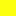

<!doctype html>
<html lang="en">
    <head>
        <meta charset="utf-8">
        <meta http-equiv="X-UA-Compatible" content="IE=edge">
        <meta name="viewport" content="initial-scale=1,user-scalable=no,maximum-scale=1,width=device-width">
        <meta name="mobile-web-app-capable" content="yes">
        <meta name="apple-mobile-web-app-capable" content="yes">
        <link rel="stylesheet" href="css/leaflet.css" />
        <link rel="stylesheet" type="text/css" href="css/qgis2web.css">
        <link rel="stylesheet" href="css/MarkerCluster.css" />
        <link rel="stylesheet" href="css/MarkerCluster.Default.css" />
        <style>
        html, body, #map {
            width: 100%;
            height: 100%;
            padding: 0;
            margin: 0;
        }
        </style>
        <title></title>
    </head>
    <body>
        <div id="map">
        </div>
        <script src="js/qgis2web_expressions.js"></script>
        <script src="js/leaflet.js"></script>
        <script src="js/leaflet-heat.js"></script>
        <script src="js/leaflet.rotatedMarker.js"></script>
        <script src="js/OSMBuildings-Leaflet.js"></script>
        <script src="js/leaflet-hash.js"></script>
        <script src="js/leaflet-tilelayer-wmts.js"></script>
        <script src="js/Autolinker.min.js"></script>
        <script src="js/leaflet.markercluster.js"></script>
        <script src="data/0.js"></script>
        <script src="data/1.js"></script>
        <script src="data/3.js"></script>
        <script>
        var highlightLayer;
        function highlightFeature(e) {
            highlightLayer = e.target;
            highlightLayer.openPopup();
        }
        L.ImageOverlay.include({
            getBounds: function () {
                return this._bounds;
            }
        });
        var map = L.map('map', {
            zoomControl:true, maxZoom:28, minZoom:3
        })
        var hash = new L.Hash(map);
        map.attributionControl.addAttribution('<a href="https://github.com/tomchadwin/qgis2web" target="_blank">qgis2web</a>');
        var bounds_group = new L.featureGroup([]);
        var basemap0 = L.tileLayer('http://a.tile.stamen.com/terrain/{z}/{x}/{y}.png', {
            attribution: 'Map tiles by <a href="http://stamen.com">Stamen Design</a>,<a href="http://creativecommons.org/licenses/by/3.0">CC BY 3.0</a> &mdash;Map data: &copy; <a href="http://openstreetmap.org">OpenStreetMap</a>contributors,<a href="http://creativecommons.org/licenses/by-sa/2.0/">CC-BY-SA</a>',
            maxZoom: 28
        });
        basemap0.addTo(map);
        function setBounds() {
            if (bounds_group.getLayers().length) {
                map.fitBounds(bounds_group.getBounds());
            }
        }
        function geoJson2heat(geojson, weight) {
          return geojson.features.map(function(feature) {
            return [
              feature.geometry.coordinates[1],
              feature.geometry.coordinates[0],
              feature.properties[weight]
            ];
          });
        }
        function pop_0(feature, layer) {
            layer.on({
                mouseout: function(e) {
                    if (typeof layer.closePopup == 'function') {
                        layer.closePopup();
                    } else {
                        layer.eachLayer(function(feature){
                            feature.closePopup()
                        });
                    }
                },
                mouseover: highlightFeature,
            });
            var popupContent = '<table>\
                    <tr>\
                        <td colspan="2">' + (feature.properties['VILLCODE'] !== null ? Autolinker.link(String(feature.properties['VILLCODE'])) : '') + '</td>\
                    </tr>\
                    <tr>\
                        <th scope="row">COUNTYNAME</th>\
                        <td>' + (feature.properties['COUNTYNAME'] !== null ? Autolinker.link(String(feature.properties['COUNTYNAME'])) : '') + '</td>\
                    </tr>\
                    <tr>\
                        <th scope="row">TOWNNAME</th>\
                        <td>' + (feature.properties['TOWNNAME'] !== null ? Autolinker.link(String(feature.properties['TOWNNAME'])) : '') + '</td>\
                    </tr>\
                    <tr>\
                        <th scope="row">VILLNAME</th>\
                        <td>' + (feature.properties['VILLNAME'] !== null ? Autolinker.link(String(feature.properties['VILLNAME'])) : '') + '</td>\
                    </tr>\
                    <tr>\
                        <td colspan="2">' + (feature.properties['VILLENG'] !== null ? Autolinker.link(String(feature.properties['VILLENG'])) : '') + '</td>\
                    </tr>\
                </table>';
            layer.bindPopup(popupContent);
        }

        function style_0() {
            return {
                pane: 'pane_0',
                opacity: 1,
                color: 'rgba(0,0,0,1.0)',
                dashArray: '1,5',
                lineCap: 'butt',
                lineJoin: 'miter',
                weight: 1, 
                fillOpacity: 0,
            }
        }
        map.createPane('pane_0');
        map.getPane('pane_0').style.zIndex = 400;
        map.getPane('pane_0').style['mix-blend-mode'] = 'normal';
    var layer_0 = new L.geoJson(json_0, {
        attribution: '<a href=""></a>',
        pane: 'pane_0',
        onEachFeature: pop_0,
        style: style_0
    });
        bounds_group.addLayer(layer_0);
        map.addLayer(layer_0);
        function pop_1(feature, layer) {
            layer.on({
                mouseout: function(e) {
                    if (typeof layer.closePopup == 'function') {
                        layer.closePopup();
                    } else {
                        layer.eachLayer(function(feature){
                            feature.closePopup()
                        });
                    }
                },
                mouseover: highlightFeature,
            });
            var popupContent = '<table>\
                    <tr>\
                        <td colspan="2">' + (feature.properties['TOWNID'] !== null ? Autolinker.link(String(feature.properties['TOWNID'])) : '') + '</td>\
                    </tr>\
                    <tr>\
                        <td colspan="2">' + (feature.properties['TOWNCODE'] !== null ? Autolinker.link(String(feature.properties['TOWNCODE'])) : '') + '</td>\
                    </tr>\
                    <tr>\
                        <td colspan="2">' + (feature.properties['COUNTYNAME'] !== null ? Autolinker.link(String(feature.properties['COUNTYNAME'])) : '') + '</td>\
                    </tr>\
                    <tr>\
                        <td colspan="2"><strong>TOWNNAME</strong><br />' + (feature.properties['TOWNNAME'] !== null ? Autolinker.link(String(feature.properties['TOWNNAME'])) : '') + '</td>\
                    </tr>\
                    <tr>\
                        <td colspan="2">' + (feature.properties['TOWNENG'] !== null ? Autolinker.link(String(feature.properties['TOWNENG'])) : '') + '</td>\
                    </tr>\
                </table>';
            layer.bindPopup(popupContent);
        }

        function style_1() {
            return {
                pane: 'pane_1',
                opacity: 1,
                color: 'rgba(175,179,138,0.4)',
                dashArray: '',
                lineCap: 'butt',
                lineJoin: 'miter',
                weight: 2.0, 
                fillOpacity: 1,
                fillColor: 'rgba(241,244,199,0.4)',
            }
        }
        map.createPane('pane_1');
        map.getPane('pane_1').style.zIndex = 401;
        map.getPane('pane_1').style['mix-blend-mode'] = 'normal';
    var layer_1 = new L.geoJson(json_1, {
        attribution: '<a href=""></a>',
        pane: 'pane_1',
        onEachFeature: pop_1,
        style: style_1
    });
        bounds_group.addLayer(layer_1);
        map.addLayer(layer_1);
        var img_2 = 'data/2.png';
        var img_bounds_2 = [[23.0070879716,120.03368274],[23.4138113677,120.502754528]];
        var overlay_2 = new L.imageOverlay(img_2, img_bounds_2);
        bounds_group.addLayer(overlay_2);
        function pop_3(feature, layer) {
            layer.on({
                mouseout: function(e) {
                    if (typeof layer.closePopup == 'function') {
                        layer.closePopup();
                    } else {
                        layer.eachLayer(function(feature){
                            feature.closePopup()
                        });
                    }
                },
                mouseover: highlightFeature,
            });
            var popupContent = '<table>\
                    <tr>\
                        <th scope="row">VILLCODE</th>\
                        <td>' + (feature.properties['VILLCODE'] !== null ? Autolinker.link(String(feature.properties['VILLCODE'])) : '') + '</td>\
                    </tr>\
                    <tr>\
                        <th scope="row">COUNTYNAME</th>\
                        <td>' + (feature.properties['COUNTYNAME'] !== null ? Autolinker.link(String(feature.properties['COUNTYNAME'])) : '') + '</td>\
                    </tr>\
                    <tr>\
                        <th scope="row">TOWNNAME</th>\
                        <td>' + (feature.properties['TOWNNAME'] !== null ? Autolinker.link(String(feature.properties['TOWNNAME'])) : '') + '</td>\
                    </tr>\
                    <tr>\
                        <th scope="row">VILLNAME</th>\
                        <td>' + (feature.properties['VILLNAME'] !== null ? Autolinker.link(String(feature.properties['VILLNAME'])) : '') + '</td>\
                    </tr>\
                    <tr>\
                        <th scope="row">count</th>\
                        <td>' + (feature.properties['count'] !== null ? Autolinker.link(String(feature.properties['count'])) : '') + '</td>\
                    </tr>\
                    <tr>\
                        <th scope="row">max</th>\
                        <td>' + (feature.properties['max'] !== null ? Autolinker.link(String(feature.properties['max'])) : '') + '</td>\
                    </tr>\
                </table>';
            layer.bindPopup(popupContent);
        }

        function style_3(feature) {
            if (feature.properties['max'] >= 0.300000 && feature.properties['max'] <= 0.500000 ) {
                return {
                pane: 'pane_3',
                opacity: 1,
                color: 'rgba(0,0,0,0.5)',
                dashArray: '',
                lineCap: 'butt',
                lineJoin: 'miter',
                weight: 1.0, 
                fillOpacity: 1,
                fillColor: 'rgba(252,255,15,0.5)',
            }
            }
            if (feature.properties['max'] >= 0.500000 && feature.properties['max'] <= 1.000000 ) {
                return {
                pane: 'pane_3',
                opacity: 1,
                color: 'rgba(0,0,0,0.5)',
                dashArray: '',
                lineCap: 'butt',
                lineJoin: 'miter',
                weight: 1.0, 
                fillOpacity: 1,
                fillColor: 'rgba(255,127,0,0.5)',
            }
            }
            if (feature.properties['max'] >= 1.000000 && feature.properties['max'] <= 3.000000 ) {
                return {
                pane: 'pane_3',
                opacity: 1,
                color: 'rgba(0,0,0,0.5)',
                dashArray: '',
                lineCap: 'butt',
                lineJoin: 'miter',
                weight: 1.0, 
                fillOpacity: 1,
                fillColor: 'rgba(255,0,4,0.5)',
            }
            }
        }
        map.createPane('pane_3');
        map.getPane('pane_3').style.zIndex = 403;
        map.getPane('pane_3').style['mix-blend-mode'] = 'normal';
    var layer_3 = new L.geoJson(json_3, {
        attribution: '<a href=""></a>',
        pane: 'pane_3',
        onEachFeature: pop_3,
        style: style_3
    });
        bounds_group.addLayer(layer_3);
        map.addLayer(layer_3);
        var baseMaps = {};
        L.control.layers(baseMaps,{'淹水村里<br /><table><tr><td style="text-align: center;"></td><td> 0.3 - 0.5M </td></tr><tr><td style="text-align: center;"></td><td> 0.5 - 1.0M </td></tr><tr><td style="text-align: center;"></td><td> 1.0 - 3.0M</td></tr></table>': layer_3,"淹水網格": overlay_2,' 台南鄉鎮界': layer_1,' 村里界': layer_0,},{collapsed:false}).addTo(map);
        setBounds();
        </script>
    </body>
</html>
